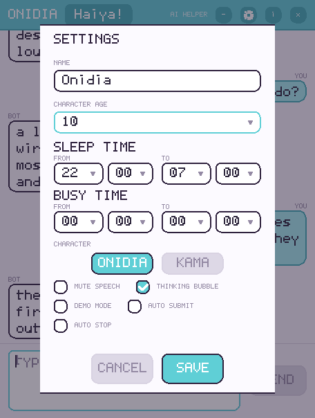
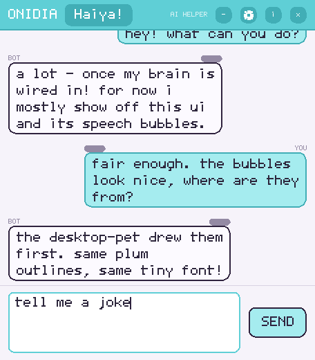

The setup guides get her thinking. This one is the part afterwards: how to start her, how to put her away, how to talk instead of type, what the settings really do, and where your conversation goes. If Onidia is already talking to you, you can stop reading this.
Onidia is two programs. Onidia Chat is the window you talk to her in; Onidia is the little character who lives on your desktop. Start with the window — it is the one that checks your keys and tells you when something is wrong.
Open the applications menu and go to Internet. Chat clients live there alongside browsers and mail, which is why she is filed under it rather than under Games.
That is the window. The character on your desktop is a separate entry called Onidia, under Games — see the next section.
onidia-chat
Both programs are installed into your PATH, so they work from any directory and you never need the full path. No Onidia yet? The install section has a one-liner that works out which build your machine needs.
One thing the installer deliberately does not do for you: put her config where she
looks for it. The package installs it to /opt/onidia/share/chat-app.ini and leaves
your home alone, because a file written there by apt would be root-owned and you
could not edit your own key afterwards. So once, before the first launch:
mkdir -p ~/.config/chat-app
cp -n /opt/onidia/share/chat-app.ini ~/.config/chat-app/ # -n never overwrites yours
Skip it if you use environment variables instead of the file, and a setup guide for the provider you picked will usually write it for you.
She checks the environment before the window opens and tells you plainly what is missing rather than failing mysteriously later. If she has nothing to think with yet, you will be sent to one of the setup guides — Gemini is the five-minute option. Once she is wired up, she greets you once when the window opens.
She is the small anime character who sits on your desktop and reacts to what she says. Three ways to start her; they all do exactly the same thing.
There is a pill in the header of the chat window that says Haiya! Click it and she appears on your desktop.
Teal means she is not running and the button will bring her on screen. Pink means she is already running and the same button will send her away. Nothing is ambiguous, and there is only ever one of her — you do not get two Onidias, you get one appearing and then leaving.
Games → Onidia. She is a companion, not a utility, so that is where the menu puts her.
onidia
If you are starting both by hand, start her first. She creates the little speech pipe that the chat window writes into, so the window has something to talk to.
She never vanishes abruptly. She says goodbye, waves and poofs out — both ways out do that, so whichever you pick she leaves politely.
While she is running the button is pink. Click it and she picks a farewell, waves and disappears. The button goes back to teal, ready to bring her on screen again.
Right-click her on the desktop and she poofs out and closes. The quickest way to clear her when the chat window is behind something else.
Press Ctrl-C in that terminal. It is the plainest exit of the three, and unlike the other two it skips the goodbye.
A microphone button sits in the input bar, to the left of the box where you type. It is only drawn when speech input is switched on, so if you cannot see it that is the reason — not a bug.
Two settings in the gear menu make that faster. Auto stop ends the take when you stop talking, so you never have to find the button again. Auto submit sends it the moment transcription finishes, turning the whole thing into a conversation with no typing at all.
Two things, both outside Onidia: a way to record, and something to do the recognising.
sudo apt install pipewire-bin alsa-utils pulseaudio-utils
She looks for a recorder in this order and takes the first one it finds:
pw-record, parecord, arecord, ffmpeg.
Those three packages cover the first three — pipewire-bin for
pw-record, pulseaudio-utils for parecord,
alsa-utils for arecord — and any one of them is enough on its
own. Add ffmpeg only if you would rather she used that.
Set stt in your config file to one of three backends.
stt = whisper # and, only if you have more than one microphone: stt-device = hw:2,0
transcribe is the default. It uses Amazon Transcribe, which is quick and accurate but
needs AWS credentials allowed to call transcribe:StartStreamTranscription.
whisper runs the recognition on the Pi itself, so nothing is sent anywhere and there is
no bill — slower on a Pi, but private. off takes the microphone button away
again.
Leave stt-device empty and she uses the system default. Fill it in with a
PipeWire node name for pw-record or parecord, or an ALSA device
such as hw:2,0 for arecord and ffmpeg.
The two are independent. If you close the window while she is still on your desktop, she stays there. Send her away with one of the two methods above.
The gear in the chat window header. Everything below is optional — the defaults are sensible — but these are the dials you are meant to turn.

What she calls herself. It replaces the name in her persona, so she signs her replies as that. Clearing the field does not erase the name she already had — it goes back to whatever her prompt originally said.
A dropdown from 7 to 13, starting on 10. She is told her age and keeps her replies age-appropriate, which is the single easiest way to change how much she talks down to you.
Both are a from and a to, to the quarter hour, and both understand windows that run past midnight — set sleep to 22:00 → 07:00 and it means what it looks like.
She is told the schedule, so a message that lands inside those hours catches her sleepy and half-asleep. It also stops her greeting you at startup while she is asleep.
Keeps unprompted messages from interrupting her. She will not break off to greet you while she is in the middle of something.
Sleep time and busy time are saved to ~/.config/chat-app/chat-app.ini, and
onidia the pet looks in exactly the same places for it as the window does. You set
it once, and both halves of her obey it.
Which of the two she appears as. It takes effect the next time she is launched, so save the settings and then use the Haiya! button (or right-click her away first). See Kama below.
Mute speech stops her saying anything out loud while still showing every reply as text. Thinking bubble shows that she is working instead of leaving you at a blank box. Auto submit and Auto stop belong to the microphone and are explained under talking instead of typing.
Off by default, and the difference is big. Off means she is planted: she stays where she is and only reacts when you speak to her. On means she roams and chatters — she wanders the desktop and starts conversations on her own.
Demo mode is the entertaining one. Turn it on, leave her alone, and go and do something else. Just know she will use the provider while she does, so it costs tokens while you are not watching.
Save writes your choices into ~/.config/chat-app/chat-app.ini,
so they survive a restart. Cancel throws the whole panel away and leaves the
previous settings untouched.
onidia the pet reads that same file, so a change made here is a change made for both of them.
If you start her inside her own sleep time or busy time, the greeting is skipped on purpose and the window just opens quietly. That is not a failure.
Reading back what you said, and what she said — and what happens to it afterwards.
The + button in the header opens the conversation. It turns into − and folds it away again, which is handy when you want the character on your desktop but not a window of chat over it.

This is worth being precise about, because “no history” is easy to say and easy to get wrong. The truth is:
The conversation lives in the chat window's memory for as long as the window is open. There
is no transcript file, no database and no upload. The only file Onidia writes is her own
settings file, ~/.config/chat-app/chat-app.ini. Close the window and the
conversation is gone — there is nothing to reopen, because nothing was kept.
That is unavoidable: every message you send goes to whichever provider you configured — Google, Amazon, or your local Ollama. What we do not do is keep a copy. Choose Hailo-Ollama if you want that conversation to stay on the machine entirely.
One practical consequence: the whole conversation from the current session is sent along with each new message, so she really does remember what you said earlier in the same session. A very long chat costs more, and eventually a chat that runs past the model’s context will have to start over. Opening a fresh window is the equivalent of a fresh start.
Onidia is not the only one. Kama is the boy in the red hoodie — the same application, the same mind and the same settings, with a different character on screen.
statics/img/kama.png and this box disappears.
statics/img/kama.png into this folder to
replace it.Open the gear menu, pick Kama in the CHARACTER row, and save. The next time she is launched you get him instead — so if Onidia is on screen, right-click her away first, then press the Haiya! button again.
onidia -character kama
The Haiya! button follows whatever you last chose in the settings, so launching him by hand does not change the button — set it in the gear menu if you want the switch to stick.
Onidia is made by one engineer, Boyke, and he would rather hear from you than not. Bugs, ideas, something she said that was brilliant or something she did that was not — all of it welcome.
Scroll to the contact form at the bottom of the main page and send it from there. It goes straight to him, and the page confirms it in the corner as soon as it is away.
Three things turn “it broke” into something he can actually fix:
onidia-chat -preflight warn
That check reads your config and prints what is and is not working — which provider you are on, whether the key resolves, whether a recorder exists for the microphone. Most reports get answered faster with it attached.